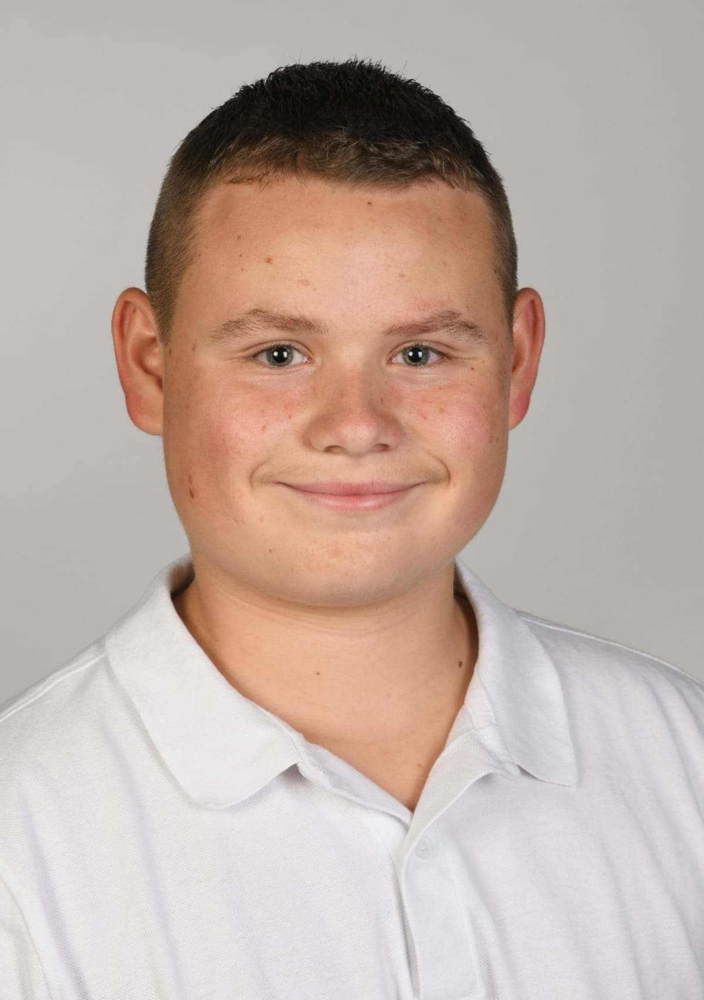

Interaktive Spiele-Webseite
Eigene Webseite mit verschiedenen kleinen Spielen. Dabei konnte ich den Aufbau von Webseiten, die Gestaltung mit CSS und erste interaktive Elemente praktisch ausprobieren.
Projekt ansehenOnline-Lebenslauf
Schüler · Sekundarstufe · Interesse an Informatik, ICT und Technik
Motivierter Schüler mit grossem Interesse an Informatik, technischen Systemen und praktischer Arbeit. Diese Webseite habe ich als interaktiven Online-Lebenslauf eigenständig im ICT-Campus entwickelt.

Jan Bruderer
Ich bin eine motivierte, offene und ehrgeizige Person, die sich gerne weiterentwickelt und neue Herausforderungen annimmt. Besonders interessiere ich mich für Informatik und digitale Technologien. Mich fasziniert, wie Technik funktioniert und wie man mit kreativen Ideen Probleme lösen oder neue Projekte entwickeln kann. Ich arbeite gerne logisch, lerne schnell Neues dazu und probiere mich immer wieder an neuen Themen aus. Durch meine Zeit beim ICT Campus konnte ich wertvolle Erfahrungen sammeln, spannende Einblicke in die Informatikwelt erhalten und mein Interesse an Technologie noch weiter stärken. Vor allem gefällt mir, dass die Informatik ständig neue Möglichkeiten bietet und man nie aufhört dazuzulernen. Genau diese Mischung aus Kreativität, logischem Denken und Innovation macht diesen Bereich für mich so spannend.
Ich interessiere mich besonders dafür, wie digitale Lösungen den Alltag verbessern können und wie man mit Technologie neue Ideen umsetzen kann. Dabei arbeite ich gerne an Projekten, bei denen man kreativ denken und gleichzeitig strukturiert arbeiten muss. Ich finde es spannend, neue Programme, Systeme oder digitale Trends kennenzulernen und mich immer weiterzubilden. Die Informatik entwickelt sich ständig weiter und genau das motiviert mich, immer neugierig zu bleiben und Neues zu entdecken.
Neben der Informatik spielt auch persönliche Weiterentwicklung eine grosse Rolle in meinem Leben. Ich versuche immer, aus Erfahrungen zu lernen und mich Schritt für Schritt zu verbessern. Ein Sprachaufenthalt hat mir dabei besonders geholfen. Dort konnte ich nicht nur meine Sprachkenntnisse verbessern, sondern auch selbstständiger werden, neue Menschen kennenlernen und lernen, mich an neue Situationen anzupassen. Diese Erfahrung hat mich offener, selbstbewusster und unabhängiger gemacht und mir gezeigt, wie wichtig Kommunikation, Offenheit und Anpassungsfähigkeit sind. Gleichzeitig habe ich gelernt, aus meiner Komfortzone herauszukommen und neue Herausforderungen anzunehmen.
Auch Sport ist ein wichtiger Teil meines Alltags. Durch Handball und Aikido habe ich gelernt, Verantwortung zu übernehmen, diszipliniert zu bleiben und nie zu schnell aufzugeben. Vor allem als Handballtorwart sind Konzentration, Teamgeist und Ruhe in schwierigen Situationen sehr wichtig. Der Sport hat mir gezeigt, wie wichtig Zusammenhalt, Vertrauen und harte Arbeit sind. Gleichzeitig hilft er mir, einen guten Ausgleich zum Alltag zu haben und immer motiviert zu bleiben. Ich mag es, Teil eines Teams zu sein, gemeinsam Ziele zu erreichen und mich stetig zu verbessern. Sport hat mich mental stärker gemacht und mir beigebracht, auch unter Druck ruhig und fokussiert zu bleiben.
Freunde beschreiben mich oft als zuverlässig, hilfsbereit und zielstrebig. Ich arbeite gerne mit anderen zusammen, kann aber auch selbstständig Verantwortung übernehmen. Neue Projekte motivieren mich besonders, weil ich dabei kreativ sein und gleichzeitig Neues lernen kann. Ich interessiere mich allgemein für Technik, digitale Entwicklungen und alles, was mit Innovation und Zukunft zu tun hat. Dabei finde ich es spannend, neue Ideen auszuprobieren und eigene Lösungen zu entwickeln. Ich bin jemand, der gerne dazulernt und sich nicht mit dem Minimum zufriedengibt.
Für mich ist es wichtig, nie stehen zu bleiben und mich sowohl persönlich als auch fachlich ständig weiterzuentwickeln. Ich bin neugierig, lernbereit und motiviert, neue Erfahrungen zu sammeln und an meinen Zielen zu arbeiten. Mit meiner offenen Art, meiner Motivation und meinem Interesse an Informatik möchte ich auch in Zukunft neue Chancen nutzen, mich weiterbilden und an spannenden Projekten arbeiten. Ich freue mich darauf, neue Erfahrungen zu sammeln, mein Wissen weiter auszubauen und mich immer wieder neuen Herausforderungen zu stellen.
Hier zeige ich eigene Webseiten, die ich selbstständig geplant, gestaltet und umgesetzt habe.
Eigene Webseite mit verschiedenen kleinen Spielen. Dabei konnte ich den Aufbau von Webseiten, die Gestaltung mit CSS und erste interaktive Elemente praktisch ausprobieren.
Projekt ansehenModerne Webseite für meine Schwester zur Präsentation ihrer Tätigkeit als Hochzeitssängerin. Im Fokus standen ein persönlicher Eindruck, klare Informationen und ein ruhiges, professionelles Design.
Projekt ansehenIm Sommer 2025 absolvierte ich einen dreiwöchigen Sprachaufenthalt in Torquay, England. Während dieser Zeit konnte ich meine Englischkenntnisse deutlich verbessern und wertvolle internationale Erfahrungen sammeln. Besonders bereichernd war der Austausch mit Menschen aus verschiedenen Ländern und Kulturen. Da ich alleine unterwegs war, entwickelte ich zudem ein höheres Mass an Selbstständigkeit und Eigenverantwortung.
Am ICT Campus lerne ich verschiedene Programmierkonzepte kennen. Ich beschäftige mich selbstständig damit, wie Programme und Algorithmen funktionieren, und verstehe dadurch technische Zusammenhänge immer besser. Der ICT Campus ist ein spannender Lernort, an dem ich jeden zweiten Samstag vier Stunden lang an verschiedenen Projekten arbeite.
Beim Kindertraining übernehme ich Verantwortung, unterstütze jüngere Teilnehmende und lerne, geduldig, zuverlässig und klar zu kommunizieren.
Sekundarstufe, Flade — Klosterschulhaus St. Gallen
Primarschule Feldli — St. Gallen
Muttersprache
Muttersprache
Fortgeschritten
Grundkenntnisse
Hier befinden sich meine wichtigsten Unterlagen, Zertifikate und Nachweise.
Kommt in Kürze.
Englisch-Zertifikat – Kommt in Kürze.
Klassenlehrperson
Flade, Klosterschulhaus
Fachlehrperson
Flade, Klosterschulhaus